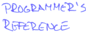

 |
This manual is still a work in progress. Most of the stuff is already there. Wow. Let's see how long it will to complete the thing.. Based on the track record of mine, it may take a while.
And don't you dare to forget the etext version of the Programmer's Reference created by Ville Muikkula. If not yet mentioned that this hypertext version is based on it and have saved a great deal of work.
| This page has been created by Sami Rautiainen. | |
| Read the small print. | Last updated September 04, 2020. |